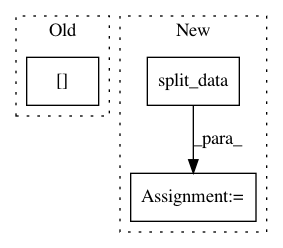

c42c3e498a4a91aaf7a7d6588dec8e313ed261e8,autosklearn/models/cv_evaluator.py,CVEvaluator,__init__,#CVEvaluator#Any#Any#Any#Any#Any#Any#Any#Any#,11
Before Change
self.cv_folds = cv_folds
self.X_train = self.D.data["X_train"]
self.Y_train = self.D.data["Y_train"]
self.Y_optimization = None
self.models = [None] * cv_folds
self.indices = [None] * cv_folds
After Change
with_predictions=with_predictions,
all_scoring_functions=all_scoring_functions,
seed=seed, output_dir=output_dir,
output_y_test=output_y_test, num_run=num_run)
self.cv_folds = cv_folds
self.X_train = self.D.data["X_train"]
self.Y_train = self.D.data["Y_train"]
self.Y_optimization = None
self.models = [None] * cv_folds
self.indices = [None] * cv_folds
def fit(self):
for fold in range(self.cv_folds):
In pattern: SUPERPATTERN
Frequency: 3
Non-data size: 3
Instances
Project Name: automl/auto-sklearn
Commit Name: c42c3e498a4a91aaf7a7d6588dec8e313ed261e8
Time: 2015-05-22
Author: feurerm@informatik.uni-freiburg.de
File Name: autosklearn/models/cv_evaluator.py
Class Name: CVEvaluator
Method Name: __init__
Project Name: automl/auto-sklearn
Commit Name: d3d73573ee26dac29902c37ed1f605b662980041
Time: 2016-02-26
Author: feurerm@informatik.uni-freiburg.de
File Name: autosklearn/evaluation/cv_evaluator.py
Class Name: CVEvaluator
Method Name: __init__
Project Name: oarriaga/face_classification
Commit Name: e90157e7f01c85e9ef22f9679f1a40bda0efb51f
Time: 2017-06-30
Author: arriaga.camargo@gmail.com
File Name: src/train_emotion_classifier.py
Class Name:
Method Name: